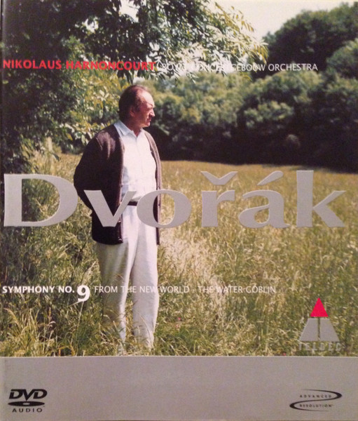

DVD
Symphony No. 9 "From The New World" / The Water Goblin
Antonín Dvořák, Nikolaus Harnoncourt, Concertgebouworkest
Media: — · Sleeve: —
—
Personal
Discogs SuggestedCA$26.33
Discogs MedianCA$26.33
Discogs HighCA$26.33
- Physical Copy ID
- BB-DVD-001
- Year
- 2001
- Label
- Teldec
- Catalog #
- 3984-25254-9
- Country
- Europe
- Genre / Style
- Classical · Romantic